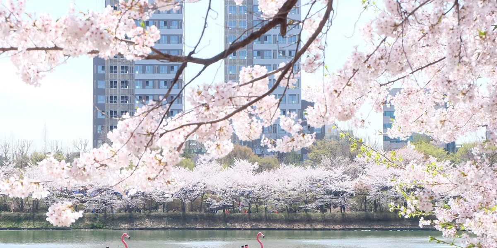
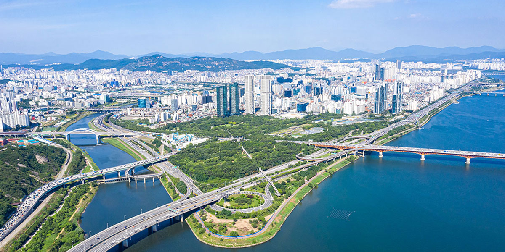
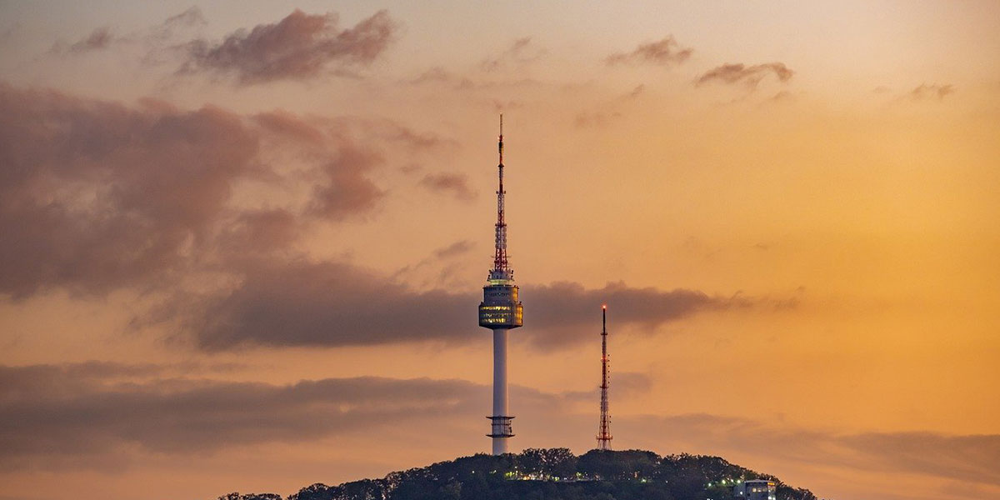
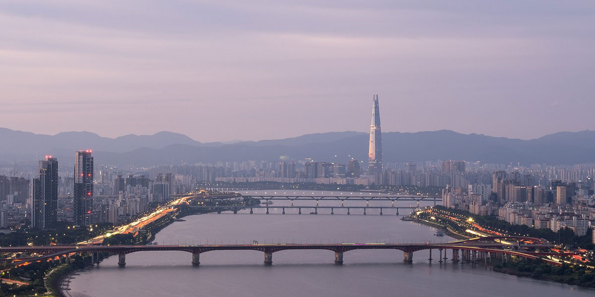
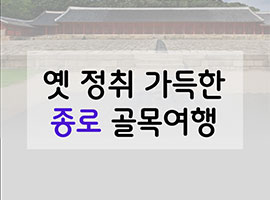

강남
과거와 현재가 만나는 곳 강남
[필경재, 한강개발기념비, 삼성 배수지공원, 압구정]
어릴적
나 어릴적 그때로
[로봇태권브이뮤지엄, 꾸러기분식, 허브천문공원, 강풀만화거리]
서울
대한제국 위에 새겨진 서울
[구)서울특별시청사, 덕수궁 중명전, 고종의 길, 손탁호텔 터, 배재학당]
동묘을지로
동묘-을지로의 뉴트로 바이브
[신설동역, 동묘 구제시장, 광장시장, 옛날다방, 을지로노가리골목]
서대문
서대문에서 외치는 대한독립만세
[독립문, 서재필동상, 서대문독립민주축제, 서대문형무소역사관]
서울 강북
서울 강북 구석구석 로컬여행
[북한산, 화계사, 숭인시장 제일분식, 나폴레옹 과자점]
서울 광진
서울 광진에서 강과 산 즐기며 힐링여행
[뚝섬유원지, 서울생각마루, 광나루, 아차산성, 아차산]
서울 도봉
서울 도봉에서 역사 문화탐방
[도봉서원, 도봉산, 김수영문학관, 전형필가옥]
서울
서울에서 만나는 백제인의 기상
[풍납동 토성, 몽촌토성, 한성백제문화제, 잠실 한강공원]
성북구
성북구, 한국 근현대의 발자취를 찾아서
[성북동, 권진규 아틀리에, 돈암시장, 최순우 가옥]
서울 관악
여유 한스푼, 서울 관악 나들이
[관악산, 관악산 호수공원, 구 벨기에 영사관]
종로
옛 정취 가득한 종로 골목여행
[종묘, 광장시장, 종로 시계골목, 탑골공원, 청진동 해장국]
이색박물관
우리가 기억할 역사 한조각, 서울 이색박문관 여행
[안중근의사기념관, 고려삼계탕, 백범김구기념관, 도산안창호기념관]
이태원
이태원이 품은 공존의 깊이
[이태원거리, 앤틱가구거리, 서울중앙성원, 해방촌]
조선왕조
조선왕조, 그들의 신화
[국립고궁박물관, 경복궁, 삼청동, 종묘]
서울 동작
한강 전투 중심지에서 휴식처로, 서울 동작의 어제와 오늘
[보라매공원, 보라매공원 에어파크, 노량진수산시장, 한강철교]




◀
▶
서울관광 추천 테마코스
서울에서 만나는
백제인의 기상
서울에서 백제를 느껴보는 여행
성북구, 한국 근현대의
발자취를 찾아서
옛 모습을 간직한 채 문화 전시공간으로 변신한 곳들을 만나보는 여행
여유 한스푼,
서울 관악 나들이
서울에서 여유를 즐길 수 있는 여행

옛 정취 가득한
종로 골목여행
서울의 옛 골목으로 떠나는 여행
우리가 기억할 역사 한조각,
서울 이색박물관 여행
독립영웅을 기리는 기념관들을 둘러보며 우리가 기억해야 할 지난 역사를 생각해보는 여행
이태원이 품은
공존의 깊이
다양한 문화가 함께 숨쉬는 이태원에서 이색적으로 떠나는 여행
조선왕조,
그들의 신화
500년 전의 조선의 이야기가 그대로 남아있는 종로에서 떠나는 여행
한강 전투
중심지에서 휴식처로,
서울 동작의 어제와 오늘
한국전쟁의 흔적이 남은 서울 동작구에서 서울의 어제와 오늘을 살펴보는 여행
1
2
3
4